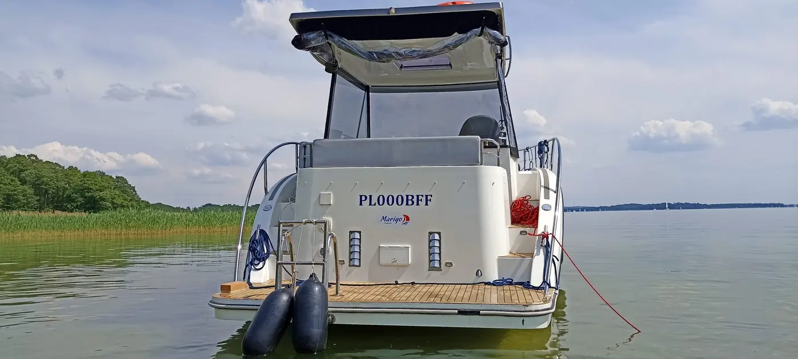

Sztynort
SztynortNexus 870 Revo
Jacht motorowy
- 4-6 osób
- 2 kabiny zamyk.
- Mercury 25 KM
- bez patentu
od 500 zł / dobaSzczegóły

Strona główna / Jachty motorowe / Stillo 30
Jacht motorowy, port Sztynort, keja nr 4. W Marigo pływają 2 jednostki Stillo 30.
od 650 zł / dobakaucja zwrotna 3000 zł · sprzątanie i dezynfekcja 300 zł
Sprawdź wolne terminyKliknij dzień odbioru, a potem dzień zdania jachtu. W sezonie (12.06-1.09) czartery tygodniowe niedziela-niedziela.
Podgląd wyglądu, zajętość przykładowa. Docelowo widget kalendarza Yacht CMS.
| Termin | Doba | Tydzień (7 dób) |
|---|---|---|
| 15.04 - 29.04 | 650 zł | 4 550 zł |
| 29.04 - 03.05 | 700 zł | 4 900 zł |
| 03.05 - 20.05 | 700 zł | 4 900 zł |
| 20.05 - 26.05 | 750 zł | 5 250 zł |
| 26.05 - 30.05 | 950 zł | 6 650 zł |
| 30.05 - 20.06 | 800 zł | 5 600 zł |
| 20.06 - 27.06 | 850 zł | 5 950 zł |
| 27.06 - 11.07 | 900 zł | 6 300 zł |
| 11.07 - 15.08 | 800 zł | 5 600 zł |
| 15.08 - 22.08 | 700 zł | 4 900 zł |
| 22.08 - 29.08 | 650 zł | 4 550 zł |
| od 29.08 | zapytaj |
Ceny z tabeli jachtów motorowych na marigo.pl/cennik. Tydzień = 7 × cena doby, bez sprzątania.
Rocznik 2019, polska konstrukcja dobrze dopasowana do warunków na Mazurach.

| Uprawnienia | bez patentu, szkolenie z obsługi przed wypłynięciem |
|---|---|
| Odbiór jachtu | 16:00-20:00, port Sztynort |
| Zdanie jachtu | 8:00-10:00, zatankowany i wstępnie wysprzątany |
| Sezon 12.06-1.09 | pełne tygodnie, niedziela-niedziela |
| Kaucja | 3000 zł, zwrotna, rozliczenie do 5 dni roboczych |
| W cenie | ogrzewanie, ekspres do kawy, 3 doby postoju w Sztynorcie, serwis na szlaku |
| Limit wiatru | do 6°B |
Trzy zamykane kabiny dwuosobowe, przestronna mesa i dwa stery strumieniowe. Sprawdza się przy rodzinnych wakacjach, rejsie trzech par i spokojnym zwiedzaniu Mazur bez gonienia kilometrów.
| 2-4 osoby | Bardzo komfortowo, dużo przestrzeni |
|---|---|
| 6 osób dorosłych | Najlepszy pełny układ kabin |
| 6 dorosłych + 2 dzieci | Możliwe, warto zaplanować bagaże |
| 8 dorosłych | Mniej komfortowo przy dłuższym rejsie |
Nie. Stillo 30 można prowadzić bez patentu. Przed wypłynięciem pokazujemy obsługę jachtu, a jeśli chcesz, dokupisz naukę prowadzenia albo sternika.
Zależnie od terminu od 4 550 zł (7 × 650 zł) do 6 300 zł (7 × 900 zł) plus 300 zł sprzątania. Rabat 10% przy rezerwacji 7 dni do 20.06 i od 29.08.
Diesel 38 KM spala około 3 litrów na godzinę. Jacht wypływa zatankowany, a przed zdaniem uzupełniasz paliwo na stacji Orlen w porcie Sztynort.
Tak, za zgodą i dopłatą 200 zł.
SztynortJacht motorowy
 Sztynort
Sztynort Sztynort
SztynortJacht motorowy
* bez patentu po przedstawieniu referencji z wcześniejszego czarteru jachtem z silnikiem.